עוברים על המדריך יחד עם Claude
עבור המדריך על מנוי Team, על שני חלקיו, הכנו ב-Legal Mind פרומפט מלווה. פרומפט הוא הוראות כתובות מראש שמדביקים בשיחה עם Claude. לוחצים על הכפתור, פותחים שיחה חדשה ב-Claude, בחשבון Team של המשרד, מדביקים ושולחים. Claude יקרא את שני חלקי המדריך, ישאל כמה שאלות על התפקיד שלכם ועל המשרד, ויבנה תוכנית אישית. אחר כך הוא יעבור איתכם פרק אחר פרק, ויבקש אישור מפורש לפני כל פעולה שחלה על כל המשרד או פותחת מידע לאחרים. Claude רק מנחה: כל לחיצה בחשבון נעשית על ידכם בלבד.
אפשר לקרוא את המדריך בעצמכם, אפשר לעבור עליו עם Claude, ואפשר לשלב. כל אחד בוחר את הדרך שמתאימה לו.
הפרומפט ארוך, ולכן אחרי ההדבקה Claude עשוי להציג אותו כקובץ מצורף מעל תיבת ההודעה. זה תקין. כשרוצים להפסיק ולהמשיך בפעם אחרת, כותבים ל-Claude שעוצרים, והוא ייתן סיכום קצר של מה שכבר נעשה ומה נשאר. כשחוזרים, פותחים שיחה חדשה, מדביקים שוב את הפרומפט ואת הסיכום, ו-Claude ממשיך מאותה נקודה.
המדריך הזה אינו עוסק בפרטיות ובאבטחת מידע. כל מה שקשור ל-DPA, לאימון מודלים ולמדיניות השמירה נמצא במדריך של Legal Mind על המעבר הבטוח למנוי Team, מדריך 1 סעיף 2, ושם הוא כתוב במלואו עם ציטוט מהמקור הרשמי.
מונחים שכדאי להכיר לפני שמתחילים
ב-Claude יש כמה מונחים שחוזרים כל הזמן, ורובם באנגלית - כי כך הם כתובים על המסך, ואם נתרגם אותם לעברית לא תמצאו אותם שם.
הם פשוטים, וכולם מוסברים גם בגוף המדריך, במקום שבו הם מופיעים לראשונה.
אז אפשר לקרוא את הפרק הזה עכשיו, ואפשר גם לדלג ממנו ולהתחיל לעבוד. אף אחד לא זוכר עשרה מונחים חדשים מקריאה אחת, ואנחנו לא מצפים לזה.
ואם תיתקלו בהמשך במונח שאינכם מכירים, תוכלו לחזור לכאן בלחיצה אחת: בצד המסך יש רשימה של כל פרקי המדריך, והפרק הזה הוא הראשון בה.
המונחים שתפגשו כבר בפרק הבא:
- Chat (שיחה) · חלון אחד של התכתבות עם Claude, מהשאלה הראשונה ועד שסוגרים אותו. בכל פעם שפותחים שיחה חדשה מתחילים מדף חלק - היא אינה יודעת דבר על מה שנאמר בשיחה הקודמת.
- Project (פרויקט) · תיקייה ב-Claude. בתוכה יושב החומר הקבוע של התיק, ובתוכה מנהלים את השיחות עליו, וכל מה שיושב בה זמין ל-Claude בכל שיחה שנפתחת שם.
- Visibility (נראות) · ההגדרה שקובעת מי רואה את הפרויקט. שתי אפשרויות בלבד, ובוחרים ביניהן כשפותחים אותו.
- Private · הפרויקט שלכם, ושל מי שהזמנתם אליו בשמו. אף אחד אחר במשרד לא רואה שהוא קיים.
- Share · הכפתור שפותח את חלון השיתוף. שם מזמינים אנשים, ושם גם קובעים מה מותר לכל אחד מהם.
ושני המונחים שקובעים מה מותר למי שהזמנתם:
- Can view · הוא קורא את החומר שבפרויקט ומשוחח עליו. לשנות בו כלום הוא לא יכול.
- Can edit · הוא משנה את החומר, וגם מזמין ומסיר אנשים בעצמו. זו הרשאה חזקה יותר ממה שהיא נשמעת.
המונחים של החומר שבתוך הפרויקט:
- Context (מאגר הידע) · המקום שאליו מעלים את מסמכי התיק ואת נהלי המשרד. Claude קורא אותם בכל שיחה, בלי שתזכירו לו.
- Instructions (הוראות הפרויקט) · לא חומר אלא כללים. מי הצדדים, את מי אתם מייצגים, ואיך אתם רוצים שהוא יענה בתיק הזה.
ומונחים שיופיעו בפרקים המאוחרים:
- Domain (דומיין) · מה שכתוב אחרי הסימן
@בכתובת מייל. בכתובתdana@legalmind.co.ilהדומיין הואlegalmind.co.il, וזה מה שמבדיל בין כתובת של המשרד לכתובת פרטית. - Skill (סקיל) · שיטת עבודה ארוזה. הוראות ודוגמאות ש-Claude מפעיל מעצמו כשהוא מזהה משימה שמתאימה להן - למשל ניתוח הסכם לפי בנק ההערות של המשרד.
- Connector (חיבור) · גשר בין Claude לכלי שאתם כבר עובדים איתו - יומן, מייל, דרייב. מחברים פעם אחת, ומאז הוא יכול לשלוף משם בעצמו.
- Add-in (תוסף) · תוספת קטנה שמתקינים ל-
Wordאו ל-Excel, והיא מוסיפה להם כפתור חדש בסרגל העליון. לחיצה על הכפתור פותחת רצועה צרה בצד המסך, ובה Claude. הוא קורא את המסמך שפתוח לפניכם ומציע בו שינויים, בלי שתעלו אותו לפרויקט ובלי שתורידו אותו בחזרה.
ושלושה מונחים על תפקידים, כי הם מבלבלים:
במשרד יש שתי מערכות הרשאות שאין ביניהן שום קשר. האחת היא בתוך פרויקט - Can view ו-Can edit שראינו למעלה. והשנייה היא בחשבון ה-Claude של המשרד:
- User · עו"ד שאינו מוגדר
OwnerאוAdmin. עובד ב-Claude בלי מגבלה, ואינו רואה את מסכי הניהול. - Admin · מנהל חברים והגדרות של הארגון. בדרך כלל מנהל תפעול, או מי שאחראי על הכלים.
- Owner · ניהול מלא של חשבון ה-Claude של המשרד, כולל החיוב.
Owner הוא הגדרה ב-Claude ולא בעלות במשרד. מנהלת משרד יכולה להיות Owner, ושותף בכיר יכול להיות מוגדר User.
וכל מה שכתוב במדריך הזה נעשה מהחשבון שלכם, בלי שום הרשאת ניהול.
מי במשרד רואה את מה שאתם עושים ב-Claude
עברתם למנוי Team, ופתחתם את Claude. המסך נראה בדיוק כמו קודם - אותה תיבת כתיבה, אותן שיחות, אותו הכל.
ומה שכן השתנה הוא שכל עורכי הדין במשרד יושבים מעכשיו תחת חשבון Claude אחד, של המשרד. ולכן השאלה הראשונה שכל עו"ד שואל היא: האם מהיום עורכי דין אחרים יכולים לראות מה אני עושה ב-Claude?
התשובה היא לא. עו"ד אחר במשרד שנכנס ל-Claude רואה מסך משלו, ריק. הוא אינו רואה את השיחות שלכם, לא את הפרויקטים שלכם ולא את הקבצים שהעליתם.
וכל שיתוף הוא פעולה שאתם עושים בכוונה - נכנסים לפרויקט, לוחצים על כפתור, מקלידים כתובת מייל. אף אחד לא מקבל גישה מעצמו, ואף אחד לא מקבל גישה בטעות.
ויש דבר אחד שכן צריך לדעת, וכדאי לדעת אותו כבר עכשיו:
עובד אחר במשרד זה דבר אחד, והמשרד כארגון זה דבר אחר.
מי שמנהל את חשבון ה-Claude של המשרד - זה מי שמוגדר Primary Owner - אינו רואה את הפרויקטים שלכם על המסך שלו. גם הוא נכנס ל-Claude ורואה את שלו בלבד.
אבל לפי התיעוד הרשמי של Anthropic הוא יכול לבקש ייצוא של המידע שבחשבון ה-Claude של המשרד. ייצוא הוא בקשה לקבל קובץ שמרכז את תוכן החשבון, והוא עשוי לכלול שיחות וקבצים, כולל שלכם.
כלומר, בשתי שורות: קולגה שלכם לא רואה מה אתם עושים ב-Claude. המשרד, אם יבקש ייצוא, יכול להגיע לזה.
ומה זה אומר לכם מחר בבוקר: פרויקט פרטי מגן עליכם מפני עובד אחר במשרד, ולא מפני המשרד. מי שמנהל תיק שרגיש גם בתוך המשרד עצמו - כדאי שיידע את זה לפני שהוא מעלה לשם מסמכים, ולא אחרי.
פותחים פרויקט, ומחליטים מי רואה אותו
זה המסלול שתעשו בכל פעם שנפתח תיק חדש. בפעם הראשונה הוא ייקח כמה דקות, ומהפעם השנייה פחות מדקה.
ולמה בכלל פרויקט ולא סתם שיחה: שיחה בודדת מתחילה כל פעם מאפס. אתם מסבירים את התיק, מעלים מסמכים, ובשיחה הבאה מתחילים מחדש. בפרויקט החומר יושב במקום קבוע, ו-Claude קורא אותו בכל שיחה שנפתחת שם.
ובמשרד עורכי דין פותחים פרויקט לאחד משניים: לתיק, או לשיטת עבודה.
שלב 1 · לוחצים על Projects בסרגל הצד:
בסרגל הצד של Claude, מתחת לכפתור New, יש שורה בשם Projects. לוחצים עליה, ונפתח עמוד הפרויקטים:
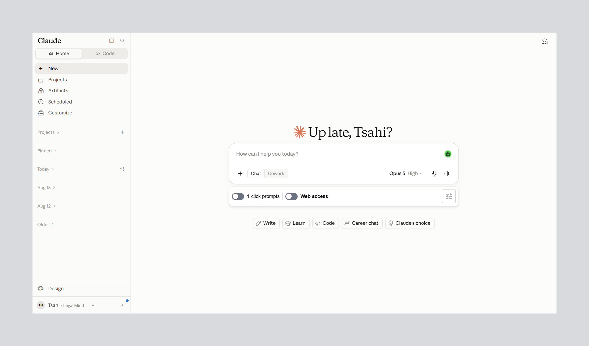
מסך הפתיחה של Claude
- 1 Projects. כאן יושבים כל הפרויקטים שלכם, ומכאן פותחים חדש.
- 2 שורת החשבון, ובה שם הארגון. זה המקום היחיד במסך שאומר לכם שאתם בסביבת המשרד ולא בחשבון הפרטי שלכם. מי שיש לו שני חשבונות תחת אותו מייל - שיבדוק כאן לפני שהוא מעלה חומר של לקוח.
שלב 2 · מכירים את שלוש הלשוניות בעמוד הפרויקטים:
בראש העמוד יש שלוש לשוניות, וכדאי להכיר אותן עכשיו כי בהמשך תחפשו בהן:
- Your projects · מה שאתם פתחתם.
- Organization · מה שפתוח לכל המשרד.
- Shared with you · מה שהזמינו אתכם אליו אישית.
והכפתור שפותח פרויקט חדש נמצא למעלה מימין.
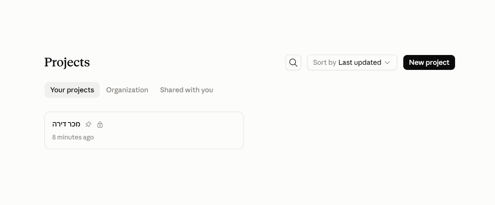
עמוד הפרויקטים
- 1 הלשונית Your projects. כאן נמצאים כל התיקים שאתם פתחתם בעצמכם - גם אלה שרק אתם רואים, וגם אלה ששיתפתם עם אחרים. זו הלשונית שנפתחת כברירת מחדל.
- 2 הלשונית Organization. כאן נמצאים תיקים שמישהו במשרד פתח לכלל הארגון - כלומר כל עו"ד יכול להיכנס אליהם בלי שהזמינו אותו. הם מופיעים אצלכם גם אם אין לכם שום קשר אליהם.
- 3 הלשונית Shared with you. כאן נמצאים תיקים שאדם אחד הזמין אתכם אליהם בשמכם, ולא תיקים שנפתחו לכל המשרד.
- 4 הכפתור New project, ומכאן פותחים תיק חדש.
- 5 אייקון מנעול קטן על כרטיס של תיק. הוא מופיע רק על תיק פרטי, ולכן אפשר לעבור על הרשימה ולראות במבט אחד אילו תיקים סגורים ואילו לא, בלי להיכנס לאף אחד מהם.
שלב 3 · נפתח את חלון New project ונלמד איך למלא אותו בצורה הנכונה ביותר:
לחיצה על New project פותחת חלון אחד, ובו כל מה שצריך כדי לפתוח תיק: שדה לשם התיק, שדה לתיאור קצר, ובתחתית החלון אזור בשם Visibility שקובע מי במשרד יראה את התיק הזה.
ובאזור Visibility הזה כבר מסומנת אפשרות, בלי שנגעתם בה. האפשרות המסומנת היא שם המשרד שלכם, ומתחתיה כתוב במפורש שכל אחד בארגון יכול לראות את הפרויקט ולהשתמש בו.
כלומר אם תמלאו את השם ותלחצו ליצור בלי לרדת למטה, פתחתם את התיק לכל המשרד - בלי שבחרתם בזה, ובלי ששום דבר שאל אתכם.
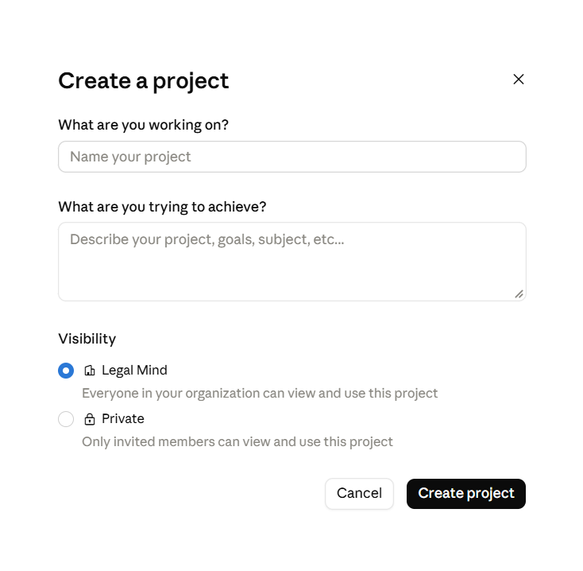
חלון יצירת פרויקט חדש
- 1 שדה השם של התיק. במסך הוא מסומן בשאלה
What are you working on? - 2 שדה התיאור, שבמסך מסומן בשאלה
What are you trying to achieve?מילויו אינו חובה. - 3 האזור
Visibility, שקובע מי במשרד יראה את התיק. האפשרות שכבר מסומנת בו היא שם המשרד שלכם, ומתחתיה כתוב שכל אחד בארגון יכול לראות את הפרויקט ולהשתמש בו. אף אחד לא לחץ על זה - כך זה הגיע. - 4 האפשרות
Private, ומתחתיה כתוב שרק מי שהוזמן יכול לראות ולהשתמש. זו האפשרות שאתם רוצים בתיק לקוח. - 5 הכפתור
Create project. מי שילחץ עליו בלי לרדת קודם לאזורVisibility- פתח את התיק לכל המשרד.
שלב 4 · מסמנים את Private, ורק אחר כך ממלאים את השם והתיאור:
באזור Visibility מסמנים את האפשרות התחתונה, Private. מתחתיה כתוב שרק מי שהוזמן לפרויקט יכול לראות אותו ולהשתמש בו.
ואז ממלאים את השדות. השם הוא מה שתראו ברשימת הפרויקטים גם בעוד חודש, ולכן כדאי לתת שם שתזהו מיד - למשל שם הלקוח ומהות התיק. התיאור אינו חובה, ומשפט אחד מספיק.
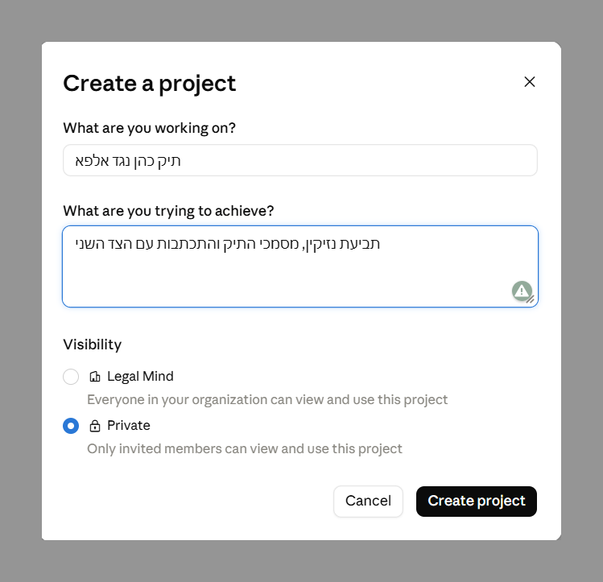
אותו חלון אחרי שמילאנו אותו
- 1 השם שהוקלד. זה מה שתראו ברשימה בעוד חודש, אז כדאי שם שתזהו.
- 2 הנראות, עכשיו על Private. זו התמונה שאתם רוצים לראות לפני שאתם לוחצים.
שלב 5 · לוחצים על Create project, ובודקים שהתיק אכן נפתח כפרטי:
לוחצים על הכפתור Create project, והתיק נפתח.
ומיד אחרי שהוא נפתח, הסתכלו על השורה שמתחת לשם התיק בראש המסך. אם כתוב בה Private - התיק סגור, וסיימתם. ואם כתוב בה שם המשרד שלכם, התיק פתוח לכל עורכי הדין ותצטרכו לשנות אותו.
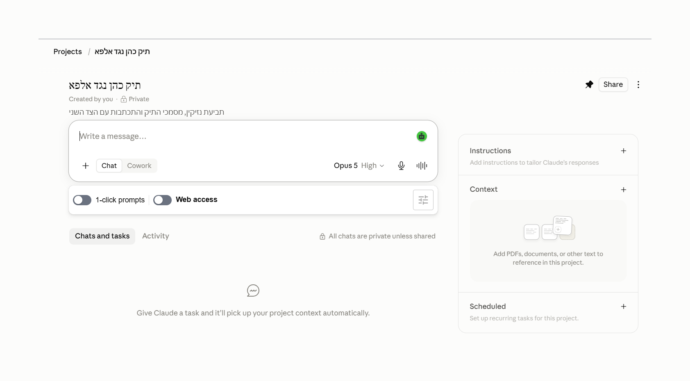
פרויקט פרטי חדש, ריק
- 1 שם הפרויקט ומצב הנראות שלו. כאן תמיד אפשר לוודא באיזה מצב הוא נמצא.
ואת אותה בדיקה אפשר לעשות גם על כל התיקים יחד, בלי להיכנס לאף אחד מהם. ברשימת הפרויקטים מופיע אייקון מנעול קטן על כל כרטיס של תיק פרטי, וכרטיס שאין עליו מנעול הוא תיק שכל המשרד רואה.
ואם פתחתם פרויקט לכל המשרד בטעות:
זה קורה, וזה הפיך.
נכנסים לפרויקט, לוחצים על Share, ובתחתית החלון שנפתח יש אזור בשם General access. משם מחזירים אותו ל-Only people invited. נראה את המסך הזה מקרוב בפרק הבא.
ומה שחשוב לדעת: השינוי חל מכאן והלאה. הוא לא מבטל את מה שכבר נקרא בזמן שהפרויקט היה פתוח, ולכן הכלל הוא להתחיל סגור ולפתוח רק כשצריך.
ומה מכניסים לפרויקט אחרי שנוצר:
עכשיו מכניסים אליו את החומר של התיק. בצד הפרויקט יש אזור בשם Context, ולשם מעלים את המסמכים ואת נהלי המשרד.
כל מה שיושב שם, Claude קורא בכל שיחה שתפתחו בפרויקט - בלי שתזכירו לו ובלי שתעלו שוב.
נראה את זה מקרוב בפרק 05.
כיצד משתפים תיק עם עו"ד אחד, וכיצד מחליטים מה הוא יוכל לעשות בו
עד עכשיו התיק היה שלכם בלבד. פתחתם אותו כ-Private, והוא אינו מופיע במסך של אף אחד אחר במשרד.
והפרק הזה עוסק ברגע שבו אתם רוצים שעוד מישהו יעבוד עליו יחד אתכם - שותף לתיק, עו"ד מהמחלקה, או מתמחה שאתם רוצים שיקרא את החומר ולא ישנה בו כלום.
ושיתוף ב-Claude נעשה לאדם מסוים ובשמו. מקלידים את כתובת המייל שלו, קובעים מה מותר לו לעשות בתיק, ולוחצים לשתף. מרגע זה התיק מופיע אצלו במסך, והוא יכול לשוחח עם Claude על החומר שבתוכו.
ומה שקובע כמה הוא יוכל לעשות שם הוא הרשאה אחת מתוך שתיים: או שהוא רק קורא, או שהוא גם משנה. את ההבדל ביניהן נסביר בשלב 3, והוא גדול יותר ממה שהוא נשמע.
ולמה כדאי לקרוא את הפרק הזה לאט: כאן נעשות רוב הטעויות של משרדים ב-Claude. לא כי זה מסובך - אלא כי הכל קורה בחלון אחד קטן, בשלוש לחיצות, ואף אחת מהן לא שואלת אתכם אם אתם בטוחים.
וזה מה שנעשה בארבעת השלבים: נפתח את חלון השיתוף · נקליד את המייל ונוודא שהוא של המשרד · נבחר מה מותר לאדם שהזמנו · ונחליט אם כל עורכי הדין במשרד יוכלו להיכנס לתיק בלי שהזמנו אותם.
שלב 1 · פותחים את חלון השיתוף:
נכנסים לפרויקט. בשורה העליונה של המסך יש כפתור בשם Share, ולוחצים עליו.
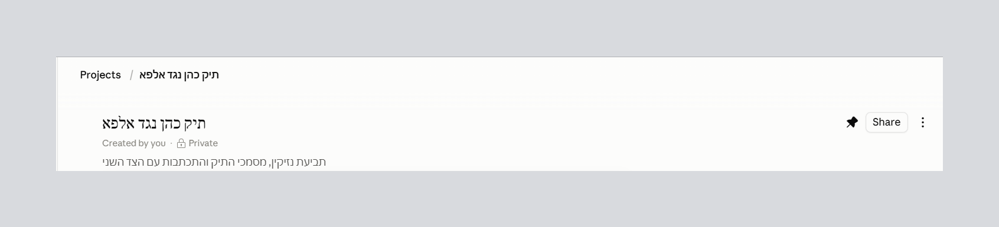
עמוד הפרויקט
- 1 Share. כל עוד לא נגעתם בו, אף אחד לא רואה את הפרויקט הזה.
נפתח חלון, ובו שלושה אזורים זה מתחת לזה. כדאי להכיר אותם לפני שנוגעים במשהו, כי כל אחד מהם עושה דבר אחר:
למעלה יש שדה ריק. שם מקלידים את המייל של מי שרוצים להזמין.
באמצע, תחת הכותרת People with access, יש רשימה של מי שכבר יש לו גישה לפרויקט. כרגע אתם לבד ברשימה הזו.
למטה, תחת הכותרת General access, יש הגדרה אחת. היא קובעת אם כל המשרד יכול להיכנס לפרויקט בלי שהזמנתם אף אחד. נגיע אליה בשלב 4.
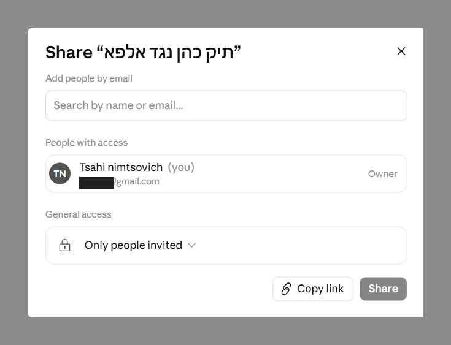
חלון השיתוף
- 1 שדה ההזמנה. מקלידים בו שם או מייל, או מדביקים רשימה שלמה.
- 2 מי שכבר יש לו גישה. ברגע הזה זה אתם בלבד, וזו הדרך לוודא לפני השיתוף שאף אחד אחר לא נמצא שם.
ליד השם שלכם ברשימה האמצעית כתוב Owner. זה אומר דבר אחד בלבד: אתם פתחתם את הפרויקט הזה.
וזה לא קשור לתפקיד שלכם במשרד. יש גם Owner של חשבון ה-Claude של המשרד כולו, וזה מי שמנהל את המנוי ואת החיוב. אותו מונח באנגלית, שני דברים שונים לגמרי - וב-Owner השני עוסק מדריך 2.
שלב 2 · מקלידים את המייל, ובודקים שהוא של המשרד:
מתחילים להקליד את שמו של מי שרוצים להזמין. אחרי כמה אותיות נפתחת מתחת לשדה רשימה של כתובות מייל שמתאימות לאותיות שהקלדתם.
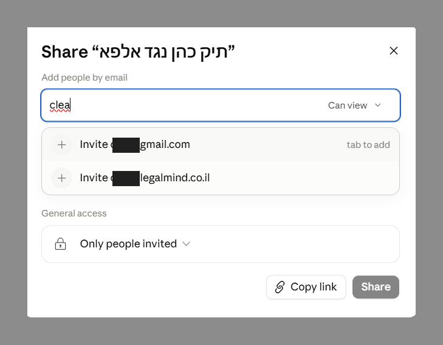
השלמות שהמסך מציע בזמן הקלדה
- 1 השורה העליונה. הכתובת שבה נגמרת ב-gmail.com, כלומר חשבון פרטי ולא של המשרד.
- 2 השורה שמתחתיה. הכתובת שבה נגמרת ב-legalmind.co.il, וזו הכתובת של המשרד - וההבדל בין השתיים הוא לחיצה אחת.
- 3 הכפתור שקובע מה מותר למי שמזמינים. ברירת המחדל שלו היא Can view.
ואם צריך להזמין מחלקה שלמה, לא חייבים להקליד שם אחרי שם. אפשר להעתיק רשימה של כתובות מייל ולהדביק אותה לתוך אותו שדה, וכל הכתובות ייכנסו כמוזמנות בבת אחת.
במחלקת נדל"ן של שבעה עורכי דין זה חוסך זמן: מעתיקים את שבע הכתובות מהמייל או מטבלה, מדביקים, ועוברים על הרשימה שהתקבלה לפני שמזמינים.
ושימו לב לשני דברים כשמדביקים רשימה.
הראשון: ההרשאה שתבחרו תחול על כל הרשימה יחד, ולא על כל אחד בנפרד. מי שרוצה לתת הרשאה גבוהה יותר לאדם אחד, יזמין את השאר ברשימה ואותו בהזמנה נפרדת.
והשני: כל מה שכתוב למעלה על סוף הכתובת נכון כאן שבעתיים. כתובת פרטית אחת שהתגנבה לתוך רשימה מודבקת כמעט בלתי אפשרי לתפוס בעין.
שלב 3 · בוחרים מה עוה"ד שהזמנתם יוכל לעשות בפרויקט:
ברגע שבחרתם שם מהרשימה, הוא נכנס לשדה, ולצידו הופיע כפתור קטן שעליו כתוב Can view. הכפתור הזה קובע מה מותר לאדם שאתם מזמינים:
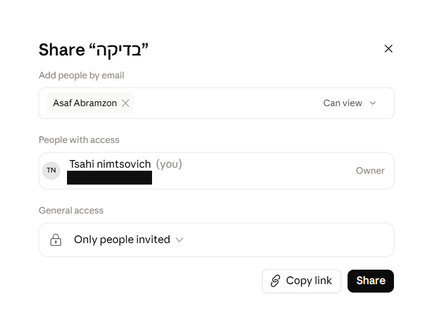
מוכן, רגע לפני ההזמנה
- 1 השם שנבחר יושב בשדה כשבב, עם
xקטן שמאפשר להתחרט. - 2 בורר ההרשאה שהופיע בתוך השדה. ברירת המחדל
Can view, ובשלב הבא נפתח אותו. - 3 כפתור
Share. רק הלחיצה עליו מזמינה בפועל.
לוחצים על הכפתור, ונפתחות שתי אפשרויות:
Can view · הוא יוכל לקרוא את כל מה שיש בפרויקט ולשוחח עם Claude עליו. לשנות בפרויקט הוא לא יוכל כלום.
Can edit · הוא יוכל לשנות את התוכן של הפרויקט - להוסיף מסמכים, למחוק מסמכים ולערוך את ההוראות.
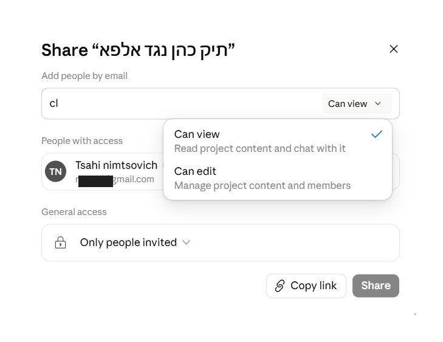
תפריט ההרשאות פתוח
- 1 Can view. רואה את הידע ומשוחח בפרויקט, ולא משנה בו כלום.
- 2 Can edit. משנה ידע והוראות, וגם מנהל את המשתתפים - ולכן נותנים אותה לאדם אחד בלבד.
אחרי שלחצתם על Share, האדם שהזמנתם מופיע ברשימה האמצעית, ולצד שמו כתובה ההרשאה שנתתם לו. אפשר ללחוץ עליה ולשנות אותה בכל רגע.
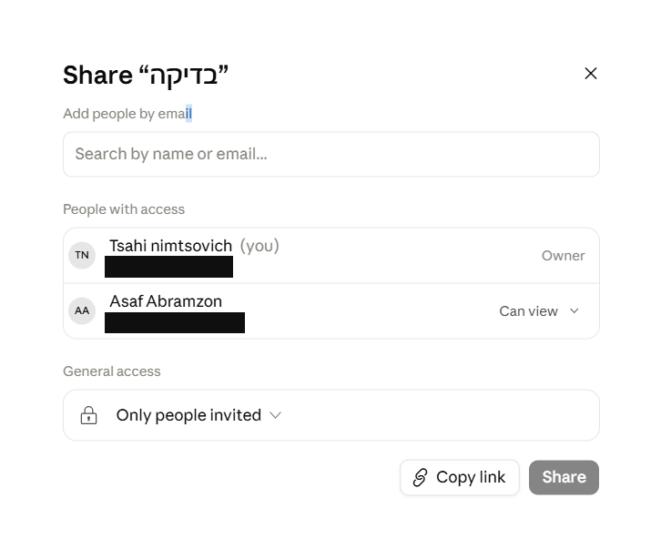
המשתתף אחרי ההוספה, עם ההרשאה שלו לצידו
- 1 אתם, ולצד השם
Owner- אתם פתחתם את התיק. - 2 עוה"ד שהוזמן, ולצד שמו ההרשאה שבחרתם -
Can view. - 3 ו-
General accessנשארOnly people invited- ההזמנה האישית לא פתחה את התיק לשאר המשרד.
ואצלו במסך זה נראה כך: הפרויקט אינו מופיע ברשימת הפרויקטים שהוא פתח בעצמו, אלא בלשונית נפרדת בשם Shared with you - כלומר "שותפו איתך".
ולכן אם הוא אומר לכם שהוא לא מוצא את הפרויקט, כמעט תמיד הוא פשוט מחפש אותו במקום הלא נכון. תגידו לו לפתוח את Shared with you.
שלב 4 · מחליטים אם כל המשרד יוכל להיכנס לפרויקט:
עד כאן הזמנתם אנשים אחד-אחד. בתחתית אותו חלון יש אזור שקובע משהו אחר לגמרי: האם כל מי שעובד במשרד יכול להיכנס לפרויקט, גם בלי שהזמנתם אותו.
האזור נקרא General access, ויש בו שתי אפשרויות:
Only people invited · רק מי שהזמנתם. זו ברירת המחדל, וזה מה שאתם רוצים בתיק לקוח.
Everyone at ואחריו שם המשרד · כל עו"ד בארגון, בלי הזמנה ובלי שתדעו מי נכנס.
וזו אותה הגדרה בדיוק שבחרתם כשפתחתם את התיק, בפרק 02, ומכאן אפשר לשנות אותה בכל רגע.
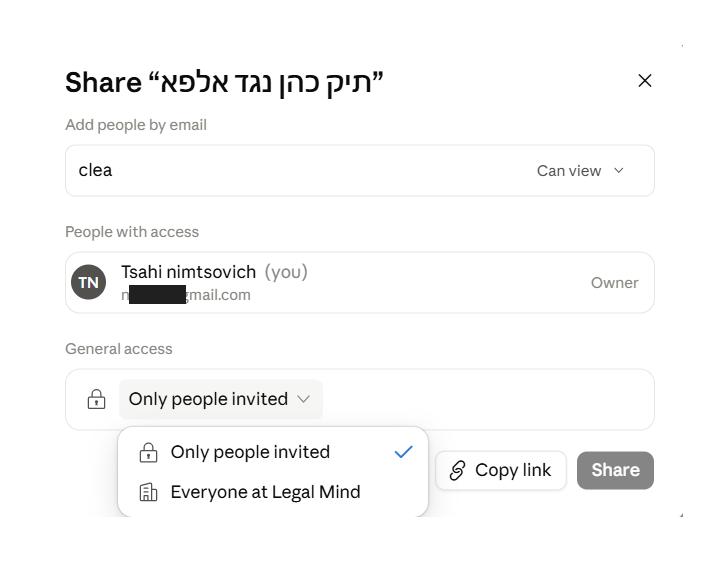
אזור General access, פתוח
- 1 המצב הנוכחי, Only people invited.
- 2 האפשרות השנייה, Everyone at Legal Mind.
וכשפרויקט כן פתוח לכל המשרד, אפשר לראות את זה מבחוץ: ליד Instructions וליד Context מופיעה תווית שאומרת שכל מי שבארגון רואה אותם. כלומר לפני שאתם מעלים מסמך, אתם רואים ליד כפתור ההעלאה עצמו מי יקרא אותו.
ואיך מסירים עובד מפרויקט משותף:
באותה רשימה שבה הוספתם אותו, לוחצים על ההרשאה שכתובה לצד שמו ובוחרים Remove access.
ובתיעוד הרשמי כתוב: מרגע ההסרה אין לו יותר גישה לפרויקט ולתוכן שבו.
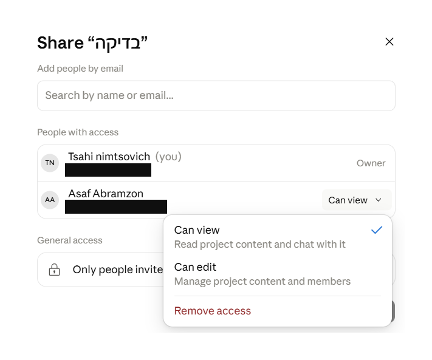
מה שנפתח בלחיצה על ההרשאה של מי שכבר בפנים
- 1 הכפתור
Can viewשליד שמו של המשתתף. הלחיצה עליו פתחה את התפריט. - 2 שתי ההרשאות, וליד הפעילה סימן וי. מתחת לכל אחת כתוב במסך מה היא נותנת - וליד
Can editכתוב במפורש: ניהול התוכן והמשתתפים. - 3 Remove access. מכאן מסירים, ומרגע ההסרה אין לו גישה לפרויקט ולתוכנו.
וכך נראית הרשימה מיד אחרי ההסרה - נשארתם רק אתם:
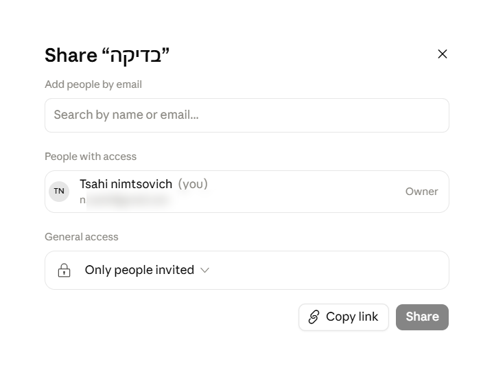
הרשימה מיד אחרי ההסרה
- 1
People with accessאחרי ההסרה - נשארתם רק אתם. התיק חזר להיות שלכם בלבד.
ויש בחלון גם כפתור בשם Copy link שמעתיק קישור לפרויקט. מה שלא כתוב בשום מקום הוא מה רואה אדם שקיבל את הקישור ואין לו גישה - ולכן אל תסתמכו עליו. מי שצריך גישה, הזמינו אותו בשמו.
האם מי ששיתפתם איתו את הפרויקט רואה גם את השיחות שלכם
זו השאלה ששואלים אותנו יותר מכל שאלה אחרת, והיא נשאלת בדרך כלל אחרי שהשיתוף כבר נעשה.
התשובה קצרה: לא.
מי שהזמנתם לפרויקט רואה את החומר שהעליתם אליו. את השיחות שאתם מנהלים שם הוא לא רואה - לא את השאלות ששאלתם, לא את התשובות שקיבלתם, וגם לא את זה שדיברתם על התיק בכלל.
וזה נכון גם בפרויקט שפתוח לכל המשרד.
מה בדיוק עובר בשיתוף:
כשאתם משתפים פרויקט, אתם משתפים את מה שקבוע בו: הקבצים שהעליתם, ההוראות שכתבתם, ובנק הידע שבנה את התיק.
השיחות אינן חלק מזה. כל שיחה נשארת של מי שפתח אותה, אלא אם הוא בחר לשתף אותה בנפרד.
וכך זה כתוב גם בתיעוד הרשמי של Anthropic: שיחות בתוך פרויקט אינן משותפות כברירת מחדל.
ואיפה רואים את זה במסך:
פרויקט שמישהו שיתף אתכם בו לא מתערבב עם הפרויקטים שפתחתם בעצמכם. הוא יושב בלשונית נפרדת בשם Shared with you.
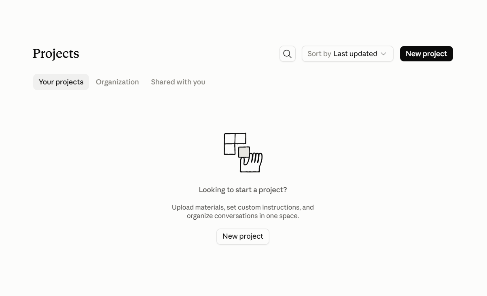
רשימת הפרויקטים, ושלוש הלשוניות שבראשה
- 1 Your projects. זו הלשונית שנפתחת מעצמה, ובה רק מה שאתם פתחתם.
- 2 Organization. פרויקטים שנפתחו לכל המשרד.
- 3 Shared with you. מה ששיתפו איתכם אישית, וזו הלשונית שאיש אינו לוחץ עליה.
- 4 ההודעה שאין פרויקטים. וכאן נולדת הטעות: המסך אומר שאין לכם כלום, ובלשונית שלידו מחכה תיק ששיתפו איתכם.
וכשנכנסים אליו, החומר המשותף נמצא בצד, והשיחות שלכם נמצאות במקום אחר לגמרי. גם ויזואלית אלה שני אזורים שונים.
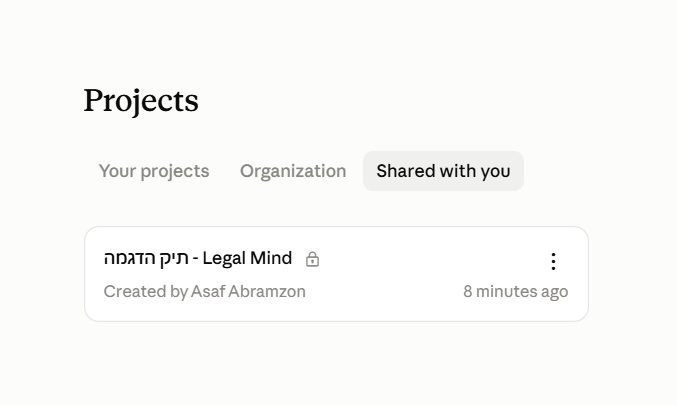
ומה שיושב שם
- 1 הלשונית לחוצה, והתיק מופיע. אותו מסך בדיוק, לחיצה אחת הבדל.
- 2 שם הפותח. פרויקט ששיתפו איתכם נושא תמיד את שם מי שיצר אותו.
- 3 המנעול. הפרויקט פרטי ולא ארגוני, כלומר הוא שותף אליכם אישית ולא נפתח לכל המשרד.
ולמה דווקא לעו"ד זה משנה:
כי בלי לדעת את זה, משרדים נופלים לאחת משתי טעויות. שתיהן עולות כסף, וכל אחת מהן הפוכה מהשנייה.
הראשונה היא להיסגר. לא פותחים שום פרויקט ארגוני, מחשש שכולם יראו על מה כולם עובדים. התוצאה: שבעה עורכי דין בונים שבע פעמים את אותה שיטה, וכל אחד מהם משכתב מחדש את מה שכבר קיים אצל השני.
והשנייה היא להיפתח לגמרי. מניחים שממילא כולם רואים הכל, ואז נכנס לפרויקט הארגוני חומר של לקוח שלא היה צריך להיכנס לשם.
ושתי הטעויות נעלמות ברגע שיודעים איפה בדיוק עובר הגבול:
מה שהעליתם לפרויקט - רואה כל מי ששיתפתם. מה שאתם כותבים בשיחה - נשאר אצלכם.
וכדי לא להתלבט בכל פעם מחדש:
הטבלה הזאת עונה על השאלה החוזרת: מה שמים איפה, ובאיזו הרשאה.
| סוג התוכן | איפה שמים אותו | ומה נותנים למי שנכנס |
|---|---|---|
| תיק לקוח פעיל, מידע רגיש | פרויקט פרטי, בלי שיתוף | כלום |
| תוצר ביניים לצוות מצומצם | משתפים פרטנית לפי מייל | Can view |
| מאגר ידע חי שמישהו מתחזק | פרטני או ארגוני | Can edit לאחראי, Can view לשאר |
| בנקי הערות, תבניות ונהלים | ארגוני, פתוח לכולם | Can view לכולם, Can edit לאחראי |
הטבלה הזאת חוזרת גם בדף התרגול להדפסה, כדי שתהיה מול העיניים בחודש הראשון.
למה Claude לא זוכר בשיחה חדשה מה סיכמתם בשיחה הקודמת
זה קורה כמעט לכולם בשבוע הראשון, ולכן נעצור כאן רגע.
כתבתם משהו חשוב בשיחה - הבהרה על התיק, החלטה על נוסח, כלל שסיכמתם. פתחתם שיחה חדשה באותו פרויקט - ו-Claude אינו יודע דבר על מה שסיכמתם.
ההרגשה היא שהוא שכח. הוא לא שכח.
מה באמת קורה בין שיחה לשיחה:
ההקשר של שיחה נשאר בתוך אותה שיחה. הוא אינו עובר לשיחה אחרת, גם כששתיהן באותו פרויקט.
וזה דווקא לטובתכם: שיחה על נושא אחד לא גוררת איתה את מה שנאמר בשיחה על נושא אחר.
ושני אזורים שכן חלים על כל השיחות בפרויקט:
בצד הפרויקט יש שני אזורים נפרדים, וקל להתבלבל ביניהם.
Instructions · איך Claude יענה בתיק הזה. מי הצדדים, את מי אתם מייצגים, ומה אסור לו לעשות.
Context · החומר עצמו. מסמכי התיק ונהלי המשרד.
שניהם נקראים בכל שיחה חדשה שנפתחת בפרויקט. ההבדל הוא שהראשון אומר לו איך לעבוד, והשני נותן לו על מה.
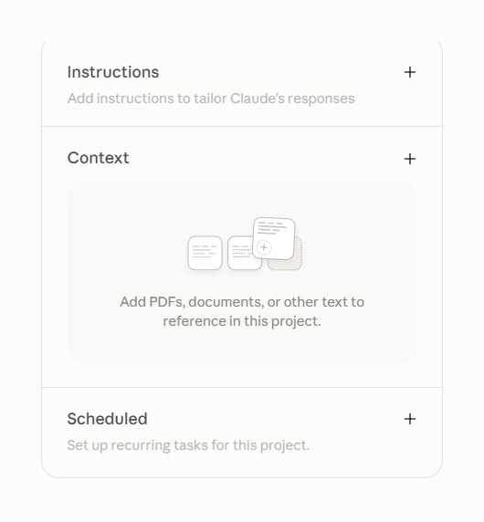
מאגר הידע של הפרויקט, ריק
- 1 המאגר. מה שיושב כאן נקרא בכל שיחה חדשה שנפתחת בפרויקט.
- 2 הכפתור להוספה.
איך מעלים חומר למאגר הידע:
לוחצים על ה-+ שליד Context, ונפתחות שתי אפשרויות: להעלות קובץ מהמחשב, או להדביק טקסט ישירות.
והאפשרות השנייה שימושית יותר ממה שנדמה. נהלי משרד, כללי ניסוח ורשימת בדיקה אפשר פשוט להדביק, בלי ליצור קובץ.
מה כדאי לשים במאגר הידע, ומה עדיף לא:
כן: מסמכי התיק · נהלי המשרד · בנק ההערות · החלטות שסוכמו ושיחולו על כל העבודה בתיק · רשימת הצדדים ומי מייצג את מי.
עדיף לא: טיוטות ביניים שישתנו מחר · חומר שאתם לא בטוחים שמותר לשתף עם מי שיש לו גישה לפרויקט · וכל דבר שנכון לשיחה אחת בלבד.
כלל האצבע: אם משהו יהיה נכון גם בעוד חודש, מקומו ב-Context. אם הוא נכון רק היום, השאירו אותו בשיחה.
מוצאים את הסקילים שלכם, ויודעים מי העלה כל אחד
ייתכן שכבר ראיתם במסך שלכם סקילים שלא אתם התקנתם, ותהיתם מאיפה הם הגיעו. הפרק הזה עונה על זה.
ומה זה בעצם סקיל:
שיטת עבודה ארוזה. הוראות, דוגמאות וקבצי עזר, ש-Claude מפעיל בעצמו כשהוא מזהה שהמשימה מתאימה - בלי שתזכירו לו בכל פעם.
במשרד זה נראה כך: ניתוח הסכם מול בנק ההערות · מילוי טופס טאבו · תבנית מכתב התראה.
שלב 1 · נכנסים להגדרות:
בפינה השמאלית התחתונה של המסך ב-Claude כתוב שמכם. לוחצים עליו, ונפתח תפריט - ובו בוחרים Settings:

תפריט החשבון פתוח
- 1 שני החשבונות שלכם, והוו הסימון שליד הפעיל. אותה כתובת מייל מחזיקה גם את חשבון המשרד וגם את החשבון הפרטי שלכם, ומכאן עוברים ביניהם. בדקו כאן לפני שאתם מעלים חומר של לקוח.
- 2 Settings. לכאן אנחנו הולכים.
ובצד החלון שנפתח יש סרגל, וזה הסרגל שילווה אתכם בשאר המדריך. תחת הכותרת Customize שבו יושבים שלושת המסכים שנעבוד איתם - הסקילים, החיבורים והתוספים:
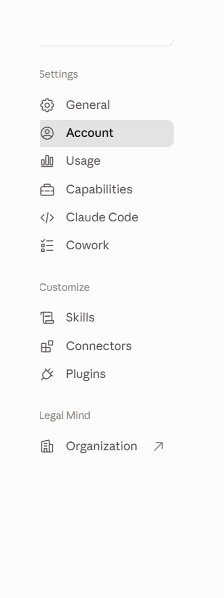
הסרגל של חלון ההגדרות, במלואו
- 1 הכותרת
Customizeושלושת הפריטים שתחתיה. מכאן נפתחים המסכים של הסקילים, של החיבורים ושל התוספים, ואליהם נגיע בפרקים הבאים.
ומכאן והלאה, לפני כל מסך נראה רק את הפריט שממנו נכנסים אליו, מסומן באדום.
שלב 2 · מתמצאים בחלון ההגדרות:
ההגדרות נפתחות כחלון מעל העבודה שלכם, ולא במקומה. השיחות והפרויקטים ממשיכים לשבת מאחוריו, וה-X בפינה מחזיר אתכם אליהם.
בסרגל של החלון הזה שלושה חלקים. למעלה ההגדרות האישיות, באמצע המדור Customize שאליו אנחנו הולכים, ולמטה Organization - ולידו חץ קטן שאומר שהוא נפתח בעמוד נפרד. שם יושבים מסכי הניהול של המשרד, וזה נושא מדריך 2.
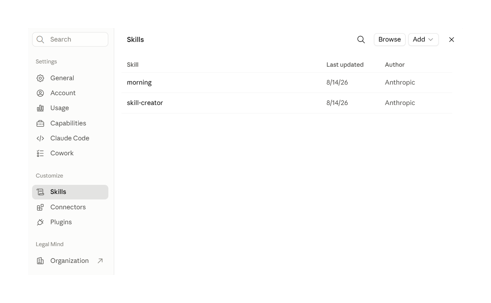
חלון ההגדרות
- 1 המדור Customize בסרגל. כאן יושבים הסקילים, החיבורים והפלאגינים, ואנחנו נחזור לכאן גם בפרק הבא.
- 2 Organization, בתחתית הסרגל. החץ שלצידו אומר שהוא נפתח בעמוד נפרד, ושם יושבים מסכי הניהול של המשרד.
- 3 ה-X שסוגר. חלון ההגדרות יושב מעל העבודה שלכם ולא מחליף אותה - סוגרים אותו, והשיחות במקומן.
שלב 3 · נכנסים למסך הסקילים:
כדי להגיע למסך הסקילים, לוחצים בסרגל של חלון ההגדרות על Skills - הוא יושב תחת הכותרת האפורה Customize:
הדרך למסך הסקילים: הפריט Skills בסרגל ההגדרות
- 1 הפריט
Skills, תחת הכותרת האפורהCustomize. לוחצים עליו, והמסך נפתח.
ואחרי הלחיצה נפתחת רשימת הסקילים:
Skills, תחת Customize
- 1 Skills. הפריט שנלחץ, ומכאן מנהלים את שיטות העבודה הארוזות.
שלב 4 · קוראים את רשימת הסקילים:
תחת Skills הסקילים מסודרים לפי המקור שלהם:
- Personal skills · אלה שיצרתם או העליתם אתם.
- Shared skills · קולגה שיתף איתכם ישירות.
- Organization skills · הופצו לכל המשרד, או הועלו בידי ה-
Owner.
רשימת הסקילים שלכם
- 1 הרשימה. כל סקיל שזמין לכם מופיע כאן, בין שהעליתם אותו ובין שהגיע מהמשרד.
- 2 העמודה Author. זו הדרך לדעת מי מאחורי הסקיל - אתם, קולגה, או מי שהעלה אותו לכל המשרד.
- 3 Add, ומכאן מוסיפים סקיל משלכם.
סקיל אישי נשאר אצלכם, וסקיל ארגוני אי אפשר למחוק:
סקיל אישי חי רק אצלכם. העליתם סקיל, ואיש מלבדכם לא רואה אותו אלא אם שיתפתם אותו במפורש.
וסקיל ארגוני מופעל אצלכם כברירת מחדל. אם הוא לא רלוונטי לעבודה שלכם אפשר לכבות אותו אצלכם, ואי אפשר למחוק אותו - הוא לא שלכם.
ואיך יודעים שסקיל בכלל פעל:
זו שאלה שחוזרת, כי סקיל עובד ברקע ולא מכריז על עצמו.
שתי דרכים לדעת:
הראשונה: Claude מציין בתשובה שהוא השתמש בו. לא תמיד, אבל לרוב.
והשנייה, והיא הבטוחה: התוצאה נראית כמו שהסקיל מגדיר. אם הסקיל אומר שכל ניתוח חוזר בטבלה עם ארבע עמודות, וקיבלתם פסקה חופשית - הוא לא פעל.
ואם הוא לא פעל, פשוט בקשו במפורש: תשתמש בסקיל של ניתוח ההסכמים.
מחברים את היומן ואת המייל, ויודעים בדיוק מה נפתח
עד עכשיו כל מה ש-Claude ידע היה מה שהעליתם לו בעצמכם.
מכאן הוא יכול להגיע למה שכבר קיים אצלכם - היומן, תיבת המייל, הקבצים - בלי שתעלו כלום.
ולא כל חיבור ברשימה נבנה בידי Anthropic:
חלק מהחיבורים ברשימה שלכם הם של Anthropic, וחלק לא.
מלבד החיבורים המובנים, אפשר לחבר ל-Claude מערכות נוספות דרך תקן פתוח בשם MCP. מי שבנה חיבור כזה יכול להוסיף אותו לארגון, והוא יופיע ברשימה לצד החיבורים המוכרים.
ולמשרד עורכי דין בישראל זה רלוונטי ישירות, כי כך מתחברים למאגרים המשפטיים שאתם ממילא עובדים איתם.
שלב 1 · פותחים את רשימת החיבורים:
לוחצים שוב על שמכם שבפינה השמאלית התחתונה, בוחרים בתפריט Settings, ובסרגל של חלון ההגדרות לוחצים על Connectors:
הדרך למסך החיבורים: הפריט Connectors בסרגל ההגדרות
- 1 הפריט
Connectors, תחת הכותרת האפורהCustomize. לוחצים עליו, והמסך נפתח.
ונפתחת רשימת החיבורים:
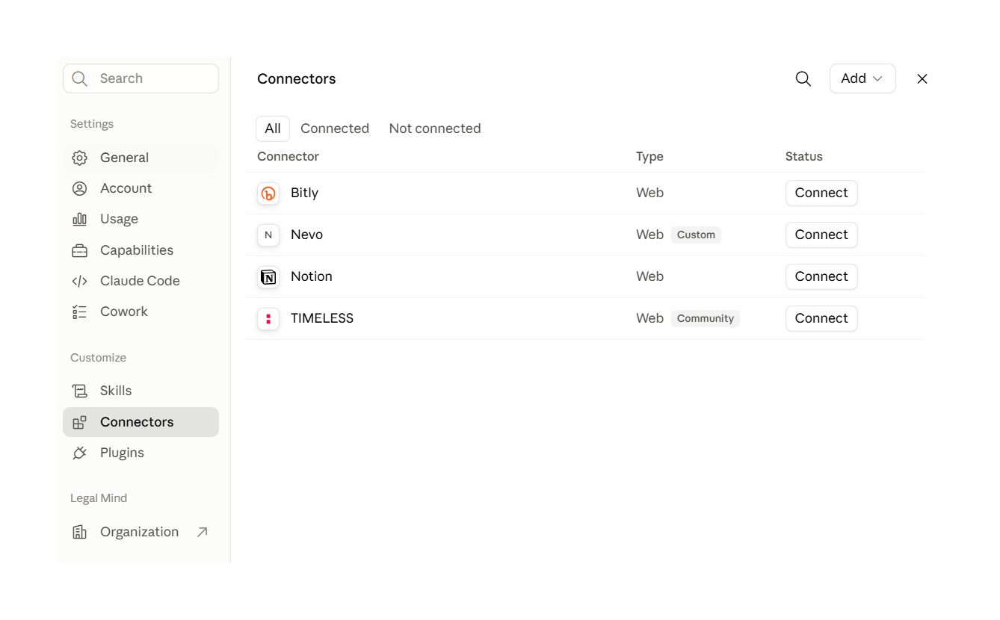
מסך החיבורים
- 1 Connectors בסרגל. כאן יושבים כל החיבורים שלכם.
- 2 הרשימה עצמה. מה שמופיע בה נקבע בידי המשרד, לא בידיכם.
- 3 Add, ומכאן מוסיפים.
שלב 2 · מוסיפים חיבור:
למעלה מימין יש Add, ובו שתי אפשרויות: All available פותח את הרשימה של Anthropic, ו-Custom מיועד לחיבור שנבנה במיוחד למשרד.
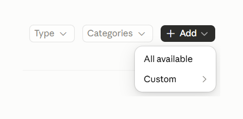
התפריט שנפתח מכפתור ההוספה
- 1 All available. הרשימה של Anthropic.
- 2 Custom. לחיבור שנבנה במיוחד למשרד.
לחיצה על All available פותחת חלון בשם Directory, ובו כל החיבורים הזמינים. הוא ארוך, ולכן לא גוללים בו אלא מחפשים.
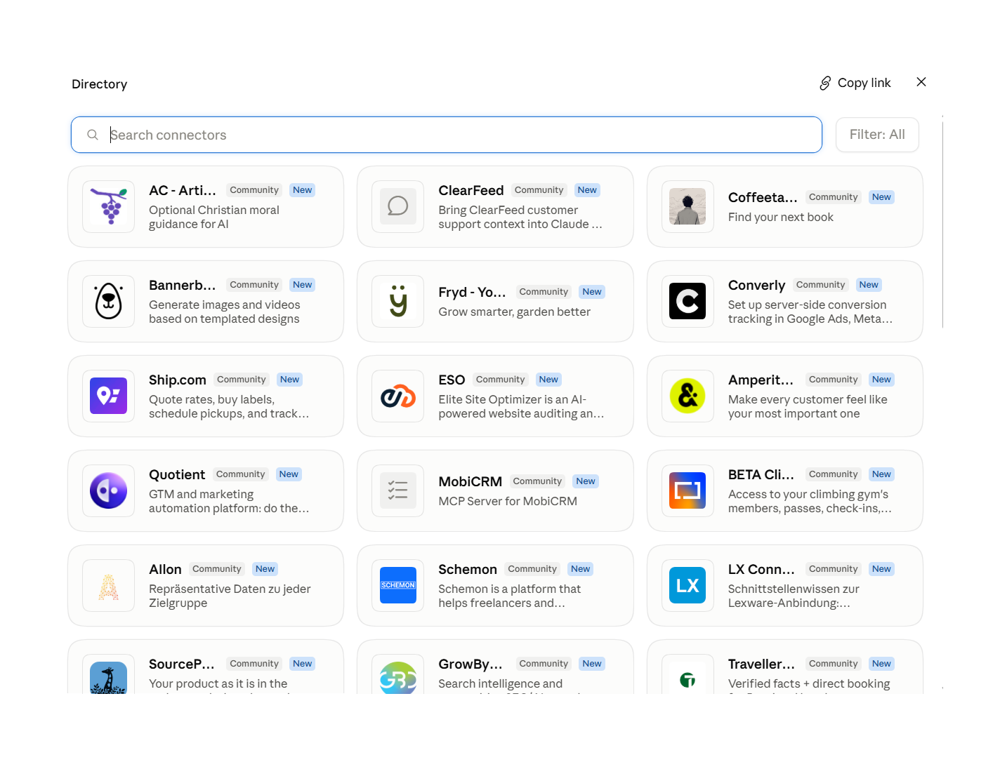
רשימת החיבורים הזמינים
- 1 שורת החיפוש. הרשימה ארוכה מכדי לגלול בה, ולכן מחפשים.
שלב 3 · מחפשים את Microsoft 365:
בשורת החיפוש שלמעלה מקלידים microsoft.
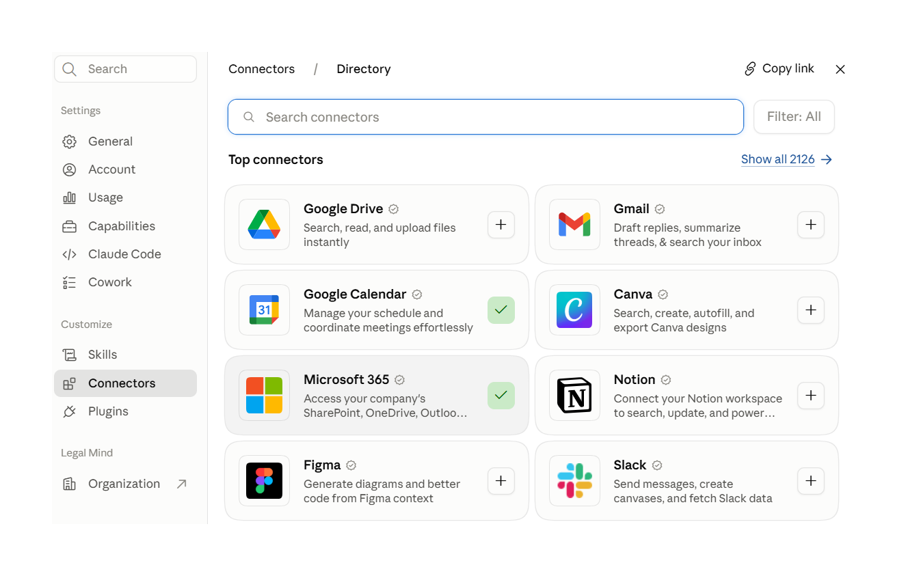
איך הוא נראה בקטלוג
- 1
Microsoft 365עם סימן האימות לצד השם. זה המחבר הרשמי. - 2 הסימן הירוק, שאומר שהחיבור כבר קיים אצלכם.
וכאן שימו לב לשני דברים. הראשון, סימן האימות לצד השם. הוא מבדיל בין החיבור הרשמי לבין כלים קהילתיים שנושאים שם דומה. והשני, שזה חיבור אחד שכולל את היומן, את המייל, את OneDrive, את SharePoint ואת Teams יחד.
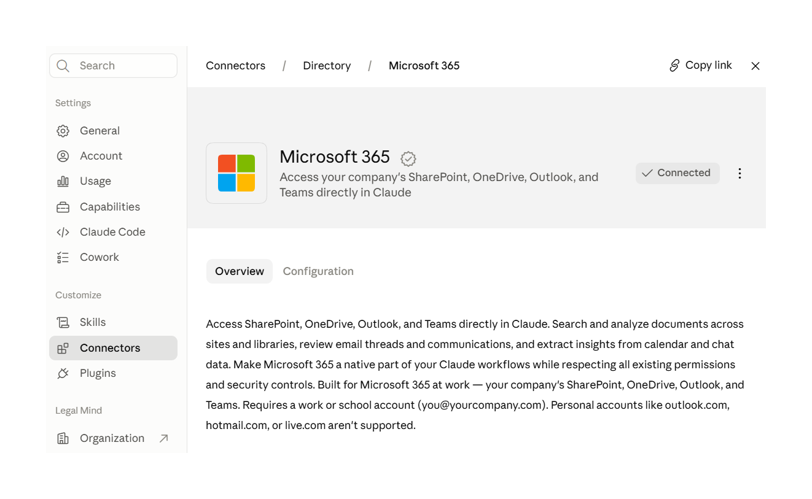
חיבור אחד שכולל את היומן, המייל, OneDrive, SharePoint ו-Teams
- 1 מה החיבור כולל. חמישה שירותים, והכל בחיבור אחד.
- 2
Connected. הסימן הזה אומר שהחיבור קיים, לא שהוא עובד. את זה בודקים בשאלה.
!! החיבור עובד רק עם חשבון משרדי. חשבון פרטי מסוג outlook.com, !! hotmail.com או live.com אינו נתמך, ומי שינסה איתו ייתקע בלי !! הסבר.
שלב 4 · השער של מנהל המערכת:
לפני שאפשר לחבר בכלל, נפתח מסך שאומר שמנהל המערכת של המשרד נדרש להשלים הגדרה. זה קורה פעם אחת לכל המשרד, ולא לכל אחד בנפרד.
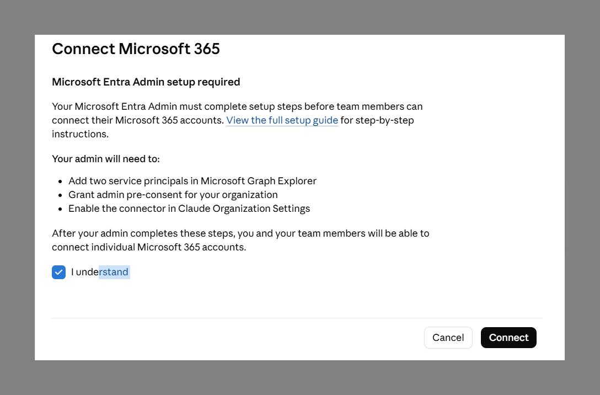
מה שמנהל המערכת של המשרד נדרש לבצע, פעם אחת
- 1 שלושת הצעדים. זה מה ששולחים למחשוב, ויש שם גם קישור למדריך המלא.
- 2
I understandואחריוConnect. בלי שהמנהל השלים את הצעדים, החיבור לא יעבוד.
שלושת הצעדים כתובים שם במפורש, ויש קישור למדריך המלא. אם אתם לא מנהלי המערכת, צלמו את המסך הזה ושלחו אותו למי שכן. זה כל מה שהוא צריך.
שלב 5 · מחברים, ומה שלא יופיע לכם:
מסמנים I understand ולוחצים Connect. וכעבור שנייה כתוב Connected.
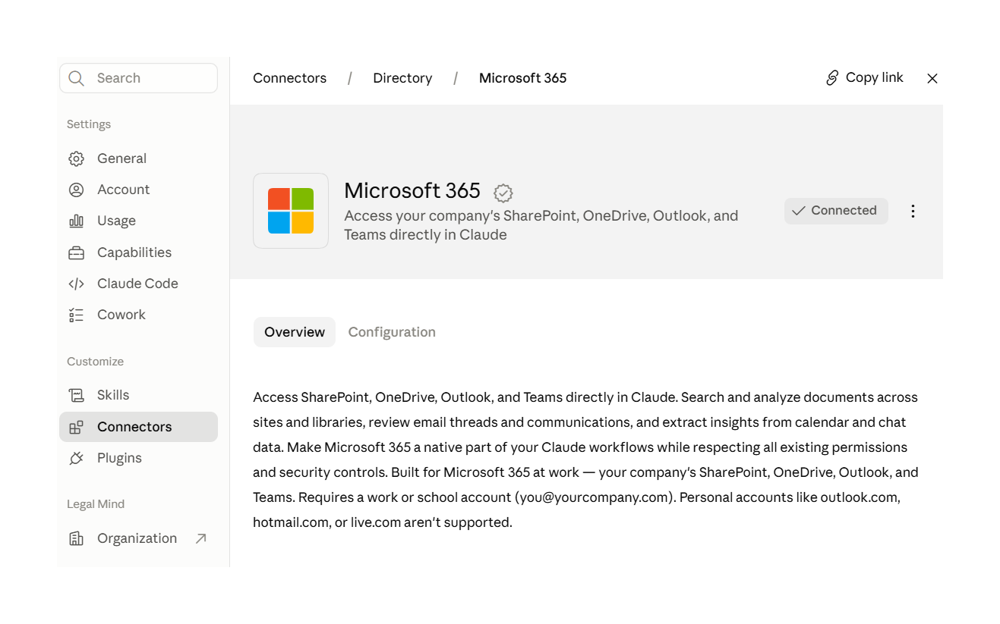
מחובר, בלי שנשאלתם דבר
- 1
Connected. הגעתם לכאן בלחיצה אחת - בלי בחירת חשבון ובלי רשימת הרשאות.
וזהו. לא נשאלתם דבר.
>> עמדת Legal Mind: אין כאן מסך שמפרט מה נתתם, ואין תיבות לסמן. >> הסיבה היא שמנהל המערכת אישר את החיבור מראש לכל הארגון, ומרגע >> שאישר, איש אינו נשאל שוב. >> >> זו אינה תקלה, וזו גם לא בעיית אבטחה. זו העברת החלטה. מי שקובע >> לאילו תיבות דואר, לאילו יומנים ולאילו ספריות יש גישה אינו אתם, >> אלא מי שביצע את ההגדרה. >> >> ולכן יש שאלה אחת ששואלים פעם אחת: מה בדיוק אושר בשמנו. >> מי שלא שאל, עובד בהנחה.
שלב 6 · בודקים שהחיבור באמת עובד:
אל תסתפקו בכך שכתוב Connected. ראינו בעצמנו שהסימן הזה הופיע כשהחיבור עוד לא היה שמיש. הבדיקה היחידה שקובעת היא לשאול שאלה שדורשת את המקור.
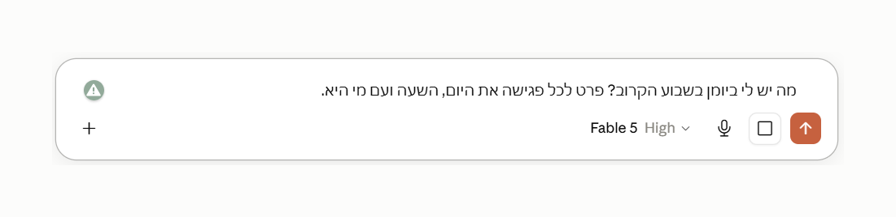
שאלת הבדיקה, לפני השליחה
- 1 השאלה. היא מבקשת פירוט ולא סיכום, וכך רואים אם התשובה באמת מגיעה מהיומן.
וזו התשובה שחזרה אצלנו:
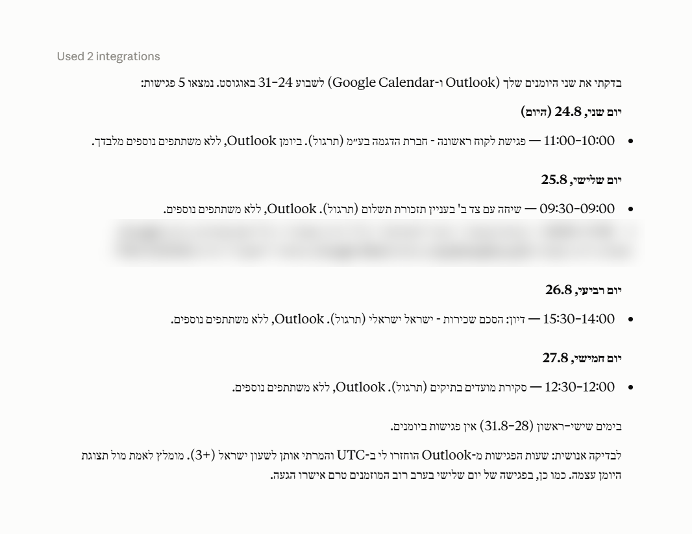
התשובה, ומה שהיא מסמנת בעצמה
- 1
Used 2 integrations. הוא פנה לשני היומנים בבת אחת. - 2 שורת ה-
UTC. הוא אמר מה עשה עם השעות והמליץ לאמת - וזו ההתנהגות שמאפשרת להסתמך עליו.
ועכשיו המייל, ומה שכבר עשיתם בלי לשים לב:
אם חיברתם Microsoft 365, המייל שלכם כבר מחובר. לא צריך לחזור לקטלוג, ואין חיבור שני להוסיף. אותו חיבור יחיד שאישרתם בשלב הקודם הביא איתו את היומן, את המייל, את OneDrive, את SharePoint ואת Teams - חמישה שירותים בהסכמה אחת.
נוח, וגם קל לפספס. מי שחיבר Microsoft 365 כדי לשאול שאלה על היומן, פתח באותה הסכמה גם את תיבת המייל ואת קובצי המשרד - ולא בהכרח שם לב. ולכן עוצרים כאן רגע, על הרשאה אחת:
ומי שמנהל את המשרד, שים לב לכפתור:
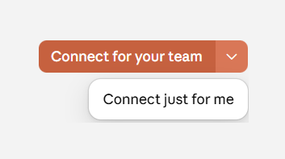
שתי אפשרויות, ורק אחת מהן בולטת
- 1
Connect for your team- הכפתור הבולט, ומחבר את כל המשרד. - 2
Connect just for me- החיבור האישי, ומסתתר בחץ.
למי שמוגדר Owner הכפתור הראשי אומר Connect for your team, והחיבור האישי מסתתר בחץ הקטן שלצידו תחת Connect just for me. שתי החלטות שונות לגמרי, ולחיצה מהירה על הכפתור הבולט מחברת את כל המשרד ולא אתכם.
עובדים מול Claude בתוך Word ובתוך Excel
עד כאן עבדנו בתוך Claude. הפרק הזה עושה את ההפך: מכניס את Claude לתוך התוכנה שאתם ממילא עובדים בה כל היום.
ומה שזה חוסך: לא מעלים את המסמך, לא מורידים אותו בחזרה, ולא עובדים על עותק. המסמך נשאר איפה שהוא, ו-Claude עובד עליו שם.
ולמה פרק כזה יושב דווקא במדריך על מנוי Team:
כי סקיל ארגוני פועל גם בתוך התוספים, ולא רק בחלון של Claude.
וזה כל החיבור: ברגע שהמשרד הגדיר לעצמו שיטה - בנק הערות, כללי ניסוח, רשימה של מה חובה לבדוק - השיטה הזו מלווה אתכם גם כשאתם יושבים על הטיוטה עצמה ב-Word, ולא רק כשאתם משוחחים עם Claude בדפדפן.
במנוי אישי כל אחד מסביר ל-Claude מחדש איך נהוג במשרד. במנוי Team מסבירים פעם אחת, וזה מגיע לכולם - גם לתוך Word וגם לתוך Excel.
ולכן הפרק הזה מראה, ולא מלמד. הוא בא להראות שהדלת קיימת ומה עומד מאחוריה, ולא להעביר קורס על Claude ב-Word או על Claude ב-Excel.
וזו גם הסיבה שתראו כאן דוגמה אחת בלבד על כל יכולת, אחת ב-Word ואחת ב-Excel. לא כי אין יותר, אלא כי מה שחשוב לנו שתצאו איתו מהפרק הזה הוא שהיכולת קיימת ושהשיטה של המשרד מגיעה גם לשם. הרוחב נמצא בסדרה ובוובינר.
מה Claude עושה בתוך Word:
את התוסף מתקינים מחנות התוספים של Microsoft. בארגון גדול, מנהל ה-Microsoft 365 יכול להתקין אותו לכל המשרד בבת אחת.
אחרי ההתקנה פותחים את Word, מפעילים את התוסף ומתחברים לחשבון Claude - ואז מופיע כפתור של Claude בסרגל העליון.
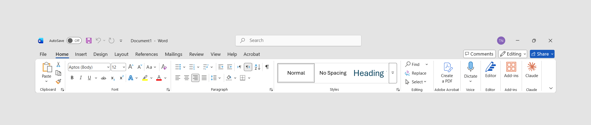
סרגל הכלים של Word
- 1 הכפתור. אם הוא לא מופיע אצלכם, בדקו קודם שגרסת ה-Word שלכם נתמכת - ורק אחר כך סגרו ופתחו שוב.
ומקרוב, שני הכפתורים שבקצה הסרגל:
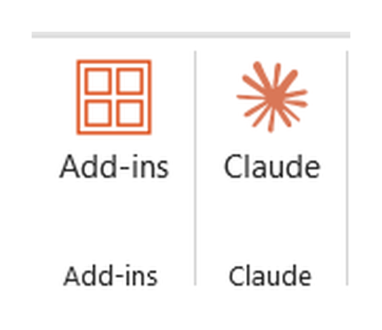
שני הכפתורים בקצה הסרגל, מקרוב
- 1 Add-ins. מכאן מתקינים תוספים, ולכאן נכנסים אם Claude עוד לא מותקן.
- 2 Claude. זה הכפתור שפותח את הפאנל, והוא מופיע רק אחרי שהתוסף הותקן.
לחיצה על הכפתור פותחת רצועה צרה בצד המסך. המסמך נשאר פתוח לצידה ואתם ממשיכים לעבוד בו כרגיל, ובתוך הרצועה יושב Claude ומדבר איתכם על המסמך הזה.
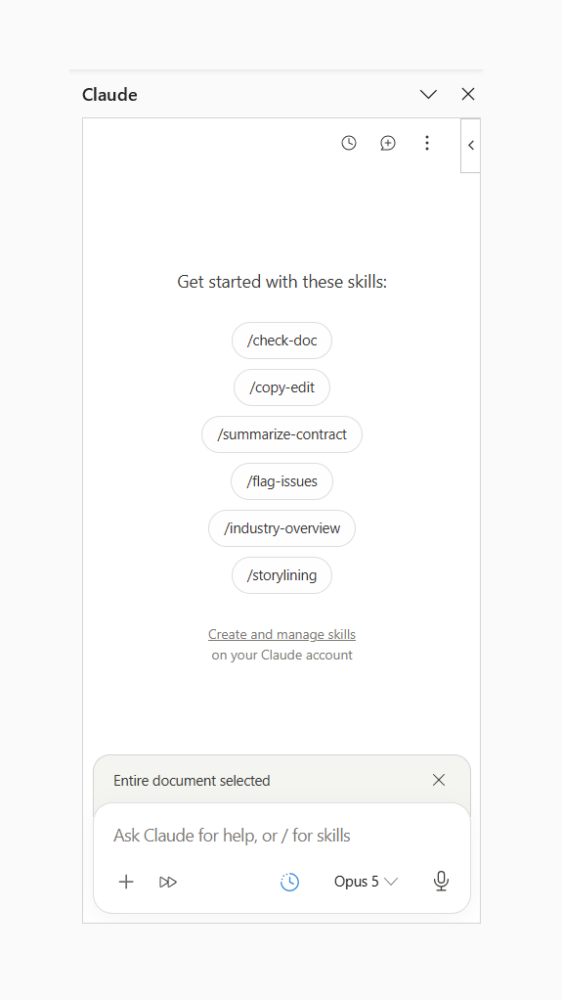
הפאנל של Claude בתוך Word
- 1 הסקילים שהוא מציע. אלה בדיוק אותם סקילים שבחשבון שלכם - מה שהמשרד הפיץ מגיע לכאן, ולכן זו שיטת העבודה שלכם ולא צ׳אט כללי.
- 2 Entire document selected. הוא אומר לכם על מה הוא עובד - כאן על המסמך כולו, ואם תסמנו קטע, על הקטע בלבד.
- 3 תיבת הכתיבה. הלוכסן פותח את רשימת הסקילים, ובלעדיו זו שאלה חופשית.
והוא עובד על המסמך הפתוח: קורא אותו ומציע ניסוחים.
וכשעובדים במצב סימון שינויים, ההצעות שלו נכנסות כשינויים מסומנים - הטקסט המקורי מופיע כמחיקה והחדש כתוספת, והכל נבדק בחלונית הסקירה הרגילה של Word. אתם עוברים על כל שינוי לפני שאתם מקבלים אותו, ותמיד אפשר לבטל ב-Ctrl+Z.
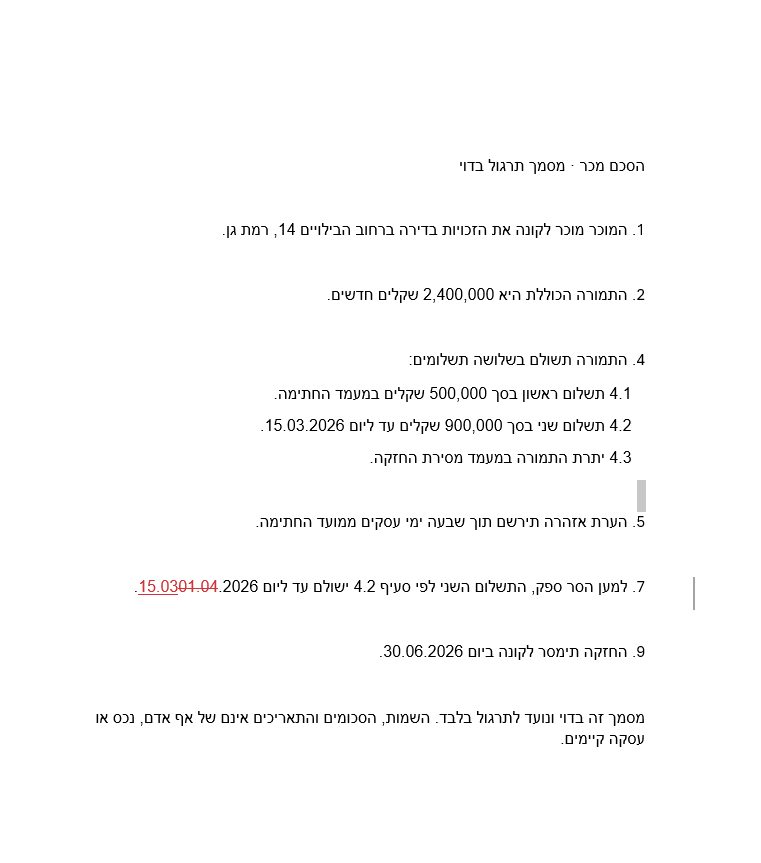
המסמך אחרי שההצעות נכנסו
- 1 שינוי שהוא הציע. מסומן כמו כל שינוי של עו"ד אחר.
ומה הוא עושה בתוך Excel:
אותו רעיון, על טבלה. לוח תשלומים, טבלת מועדים, ריכוז נתונים.
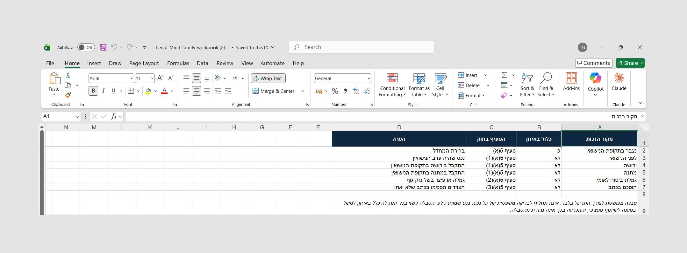
סרגל הכלים של Excel
- 1 הכפתור של Claude, בקבוצה משלו בקצה הסרגל, ליד Copilot של Microsoft. אותו כפתור בדיוק שהכרתם ב-Word, ולחיצה עליו פותחת את אותה חלונית.
והשיטה של המשרד עובדת גם בתוך Word:
סקילים ארגוניים פועלים גם בתוך התוספים.
כלומר אם המשרד הגדיר לעצמו שיטה - בנק הערות, כללי ניסוח, רשימה של מה חובה לבדוק - היא חלה גם על העבודה שלכם ב-Word.
ומעשית זה אומר שלא צריך להסביר לו כל פעם מחדש מה נהוג אצלכם. הוא כבר יודע.
ומה עושים כשההצעות שלו לא טובות:
זה יקרה, ובעיקר בפעם הראשונה.
הסיבה השכיחה היא שהוא לא ידע מה אתם מחפשים. ״תעבור על המסמך״ היא בקשה פתוחה מדי, והתוצאה תהיה כללית באותה מידה.
מה שעובד טוב יותר: לומר לו בדיוק מה לבדוק.
ואם הצעה לא טובה - פשוט דוחים אותה בסימון השינויים. המסמך חוזר למה שהיה, ואפשר לבקש שוב אחרת.
כשמשהו לא עובד בפרויקט
השאלות שחוזרות, והתשובות שלהן. אם נתקעתם - כנראה שזה כאן.
שיתפתי, והוא אומר שהוא לא רואה את הפרויקט:
בדקו שההזמנה נשלחה לכתובת שאיתה הוא מחובר לארגון, ולא לכתובת אחרת שלו. ובקשו ממנו לחפש תחת Shared with you ולא ברשימת הפרויקטים שלו.
הוא רואה את הפרויקט אבל לא יכול לשנות בו כלום:
זו הרשאת Can view, וזה תקין. מי שצריך לערוך צריך Can edit. פרק 03.
פתחתי שיחה חדשה והוא לא זוכר מה סיכמנו קודם:
זה לא באג. ההקשר לא עובר בין שיחות, ומה שצריך להישאר עובר למאגר הידע. פרק 05.
הסקיל הארגוני לא מופיע אצלי:
שתי אפשרויות: או שכיביתם אותו בעצמכם, או שהאדמין עוד לא הפעיל את היכולת ברמת הארגון. בדקו קודם אצלכם, ואם הוא לא שם - פנו לאחראי.
חיברתי יומן והוא לא מוצא כלום:
ודאו שהחיבור מסומן כמחובר ולא רק כמאושר, ושאתם שואלים על תקופה שיש בה משהו ביומן.
לחצתי Connect ב-Microsoft 365 וקיבלתי מסך שמדבר על מנהל מערכת:
זה שלב 4 של פרק 07, וזה צפוי. החיבור מחכה להגדרה חד-פעמית אצל מנהל המערכת של המשרד. צלמו את המסך, שלחו למי שמנהל אצלכם את Microsoft 365, וחזרו לחבר אחרי שהוא סיים.
הכפתור של Claude לא מופיע ב-Word:
קודם בדקו שהגרסה שלכם נתמכת בכלל - Word 2016 ו-2019 ברישיון קבוע אינם נתמכים. ואם הגרסה תקינה, סגרו את Word לגמרי ופתחו שוב, וודאו שהתחברתם בתוסף לחשבון Claude.
מסכמים מה למדתם, ולאן ממשיכים מכאן
מה שאתם יודעים לעשות עכשיו:
- לפתוח פרויקט ולהחליט בשלב היצירה מי רואה אותו.
- לשתף אדם מסוים, ולתת לו צפייה או עריכה - ולדעת מה ההבדל.
- לדעת מה נשאר פרטי גם בפרויקט משותף, ולכן להעז לשתף ידע בלי לחשוף עבודה.
- להעביר למאגר הידע מה שצריך לחול על כל השיחות.
- לזהות מאיפה הגיע כל סקיל שאתם רואים.
- לחבר יומן ומייל, ולבדוק שזה עובד.
- ולעבוד מול Claude בתוך Word ובתוך Excel.
ומה שיש לכם עכשיו ולא היה לכם קודם:
עכשיו, אחרי שראיתם את כל זה, אפשר לומר את זה בשורה: מה שעשיתם בעשרת הפרקים האלה אי אפשר לעשות במנוי אישי בכלל.
פרויקט משותף · ב-Pro וב-Max הפרויקטים שלכם הם שלכם בלבד, ואין דרך לתת לעובד אחר גישה למאגר ידע.
הרשאות · צפייה מול עריכה. במנוי אישי אין למי לתת אותן.
מכסה אישית לכל אדם · ולא מאגר משותף שאחד שורף לכולם.
וכל השאר - תקרת הוצאה, ניהול מושבים, הזדהות מאוחדת - נמצא במדריך 2.
ואם אתם גם מנהלים את המשרד:
מדריך 2 עוסק בצד הניהולי: מי מקבל איזה תפקיד, איך סקיל אחד הופך לשיטת העבודה של כל המשרד, ומי שומר שלא כל אחד יפרסם לכולם.
ואם אתם לא מנהלים - אין צורך. המדריך הזה עומד בפני עצמו.
ולסיום, כמו בפתיחה: כל שאלה על פרטיות, DPA ואבטחת מידע נמצאת במדריך של Legal Mind על המעבר הבטוח למנוי Team, מדריך 1 סעיף 2.